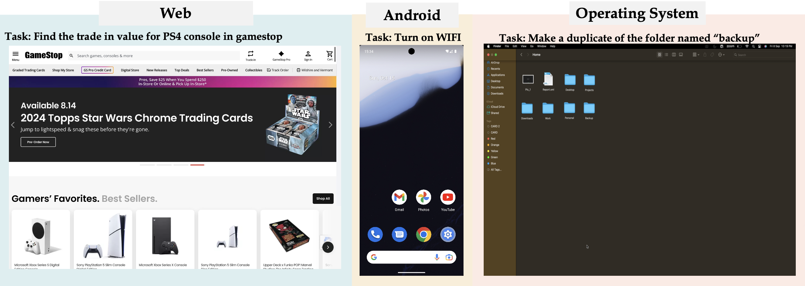
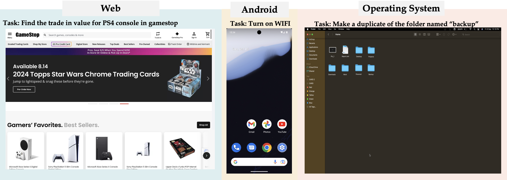
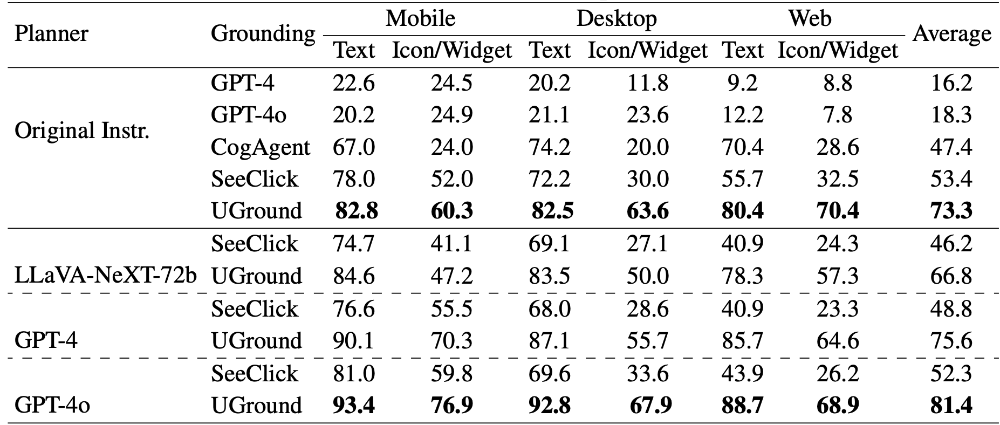
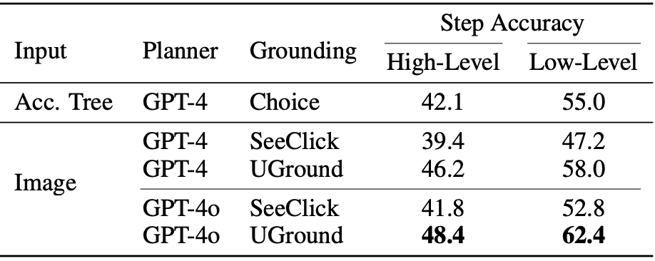
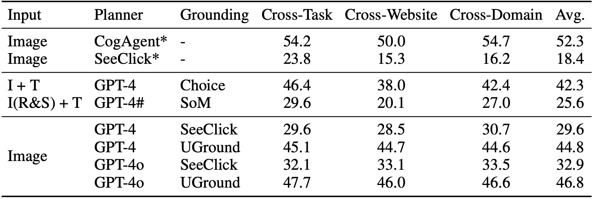
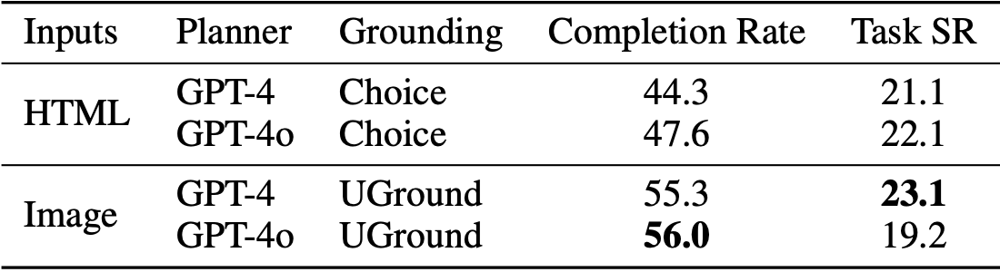

Multimodal large language models (MLLMs) are transforming the capabilities of graphical user interface (GUI) agents, facilitating their transition from controlled simulations to complex, real-world applications across various platforms. However, the effectiveness of these agents hinges significantly on the robustness of their grounding mechanisms. Traditional GUI agents predominantly utilize text-based inputs such as HTML or accessibility trees, which, despite their utility, often introduce noise, incompleteness, and increased computational overheads. In this paper, we introduce UGround, a universal pixel-level visual grounding model developed specifically for GUIs. This model, trained on 1.3 million diverse samples, leverages MLLMs as a planning module while concurrently grounding actions directly via pixel coordinates. UGround is designed to operate across different operating systems and handle both referential and action-based descriptions effectively. Our comprehensive evaluation across six benchmarks—including desktop, mobile, and web platforms—demonstrates that UGround not only outperforms existing visual grounding models, but also matches or exceeds the performance of state-of-the-art methods that rely on additional textual inputs. These results underscore UGround’s potential in significantly advancing the field of vision-based GUI agents, illustrating its ability to navigate digital environments with human-like perception and precision. This approach not only reduces dependencies on text-based inputs but also minimizes latency and inference costs, thus enhancing the practicality and user experience in real-world applications.
 

We evaluate UGround on a very recent visual grounding becnhmark, ScreenSpot. Serveral multimodal large language models including LLaVa, GPT-4, and GPT-4o have been exploited for planning.

UGround demonstrated strong performance with or without a separate planinng model. Incorporate with GPT-4o, UGround achieved the new SOTA results on ScreenSpot in every dimension.
Below are detailed evaluation results on AndroidControl and Multimodal-Mind2Web. This further shows that UGround can enable existing multimodal large language models to achieve strong performance just by relying on the visual inputs / screenspots without HTML or accessibility tree.


To further evaluate the approach's performance in more relistic settings, we also evaluate UGround in online Desktop, Mobile, and Web environments using OmniAct, AndroidWorld, and Mind2Web-Live.


TBD